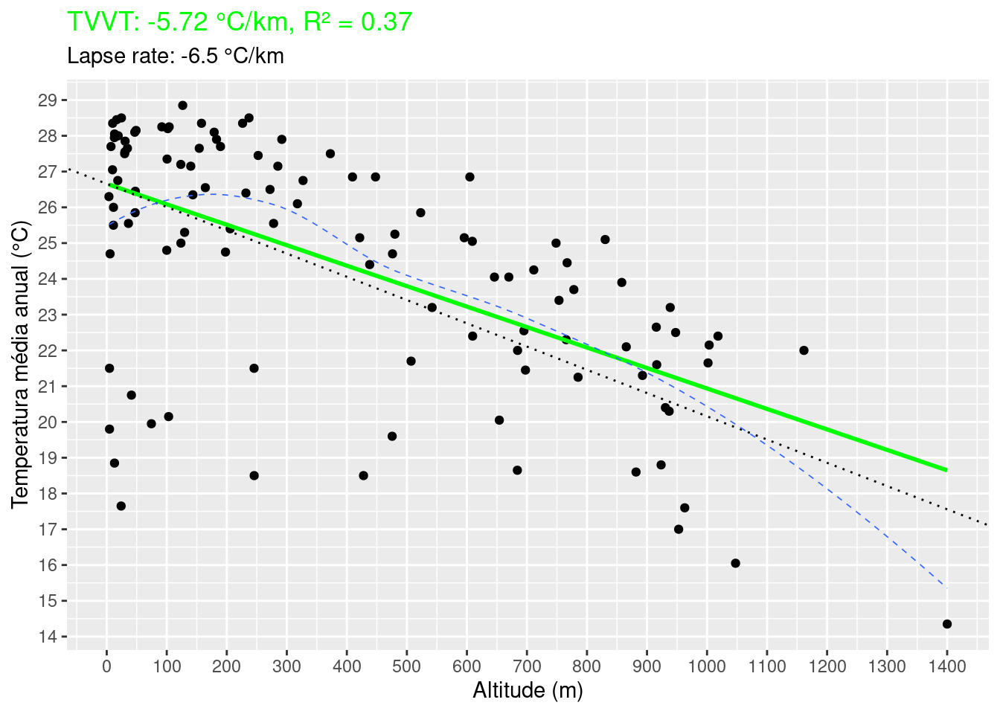
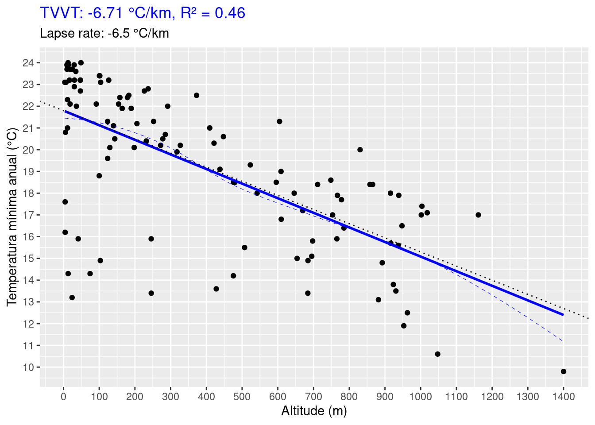
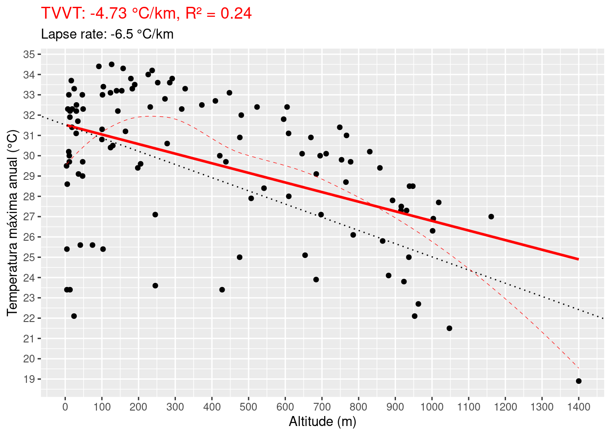
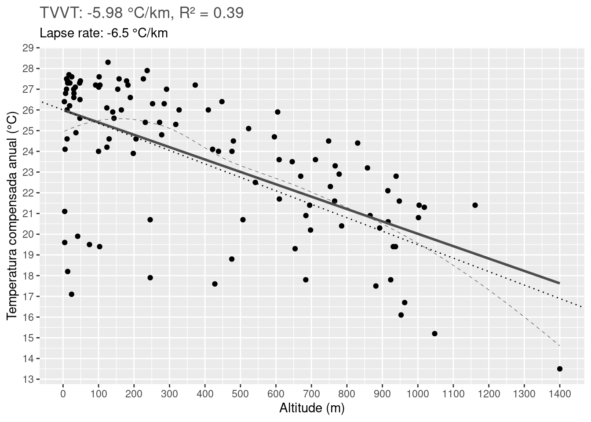
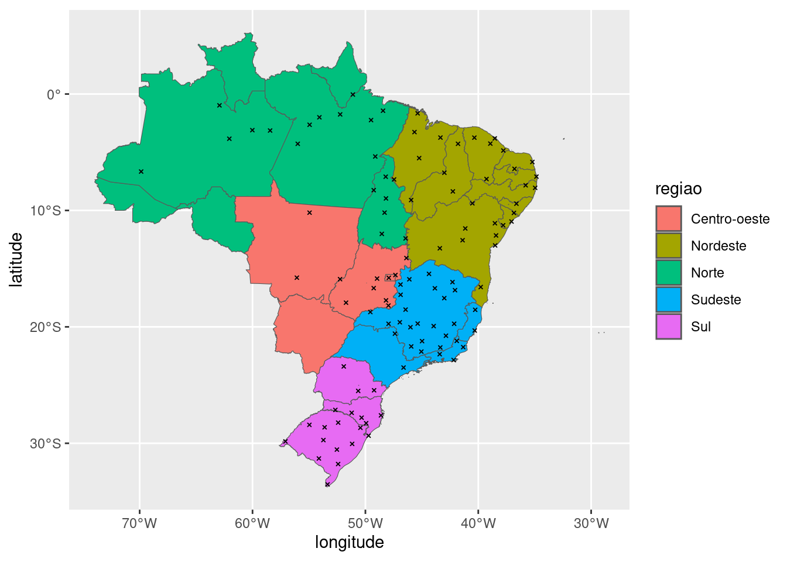
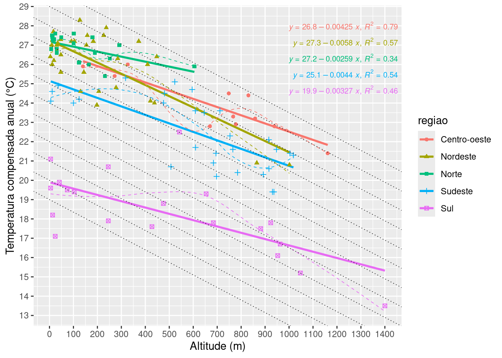
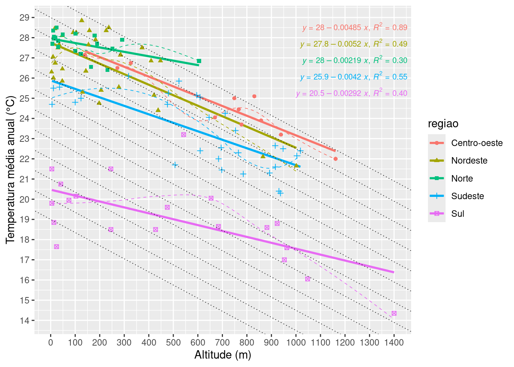
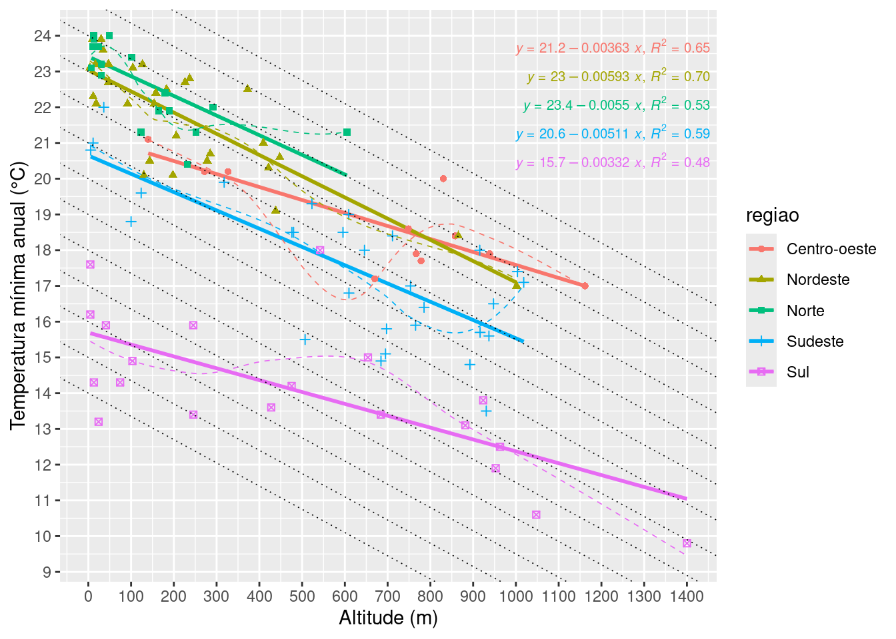
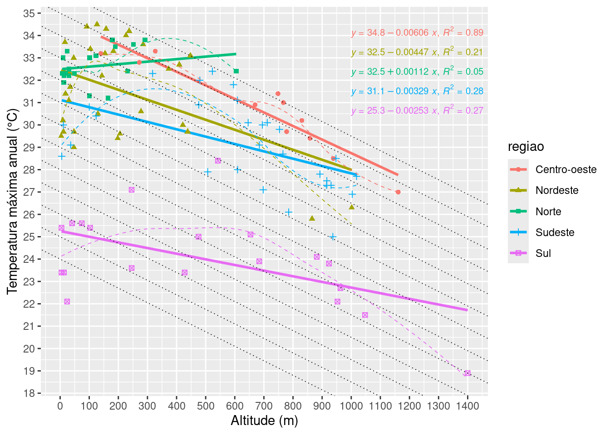

Code
install.packages("pacman")Esta atividade tem por objetivo obter a taxa de variação vertical da temperatura do ar (TVVT) a partir dos dados de temperatura das estações meteorológicas convencionais (EMC) do INMET e compará-la com a TVVT média global (Lapse rate da atmosfera padrão) de -6,5°C/km.
As informações de localização e altitude estão disponíveis em https://portal.inmet.gov.br/uploads/normais/Normal-Climatologica-ESTA%C3%87%C3%95ES.xlsx.
A temperatura do ar média (Tmed) anual climatológica de 1991-2010 será usada para determinar a TVVT. Para obter a temperatura média faremos: \(T_{med} = (T_{max} + T_{min})/2\), em que \(T_{max}\) é a tmperatura máxima do ar e \(T_{min}\) a mínima. Estes dados podem ser baixados em https://portal.inmet.gov.br/uploads/normais/Normal-Climatologica-TMAX.xlsx e https://portal.inmet.gov.br/uploads/normais/Normal-Climatologica-TMIN.xlsx.
Este documento foi elaborado para ilustrar como você pode se beneficiar ao usar o R e o RStudio como ferramentas de trabalho para manipulação e análise de dados.
Você pode pensar neste documento como um relatório dinâmico e reproduzível. Dinâmico porque você pode fazer mudanças e ao clicar em Render (no menu do RStudio) seu relatório será atualizado. Reproduzível porque você passar este arquivo (relatorio-atividade1-temo.qmd) para outras pessoas (ou você mesmo no futuro pode reutilizá-lo) que poderão reproduzir os resultados que você encontrou num computador (com R e RStudio) deles.
Os pacotes abaixo serão necessários e precisam ser instalados com o código a seguir.
install.packages("pacman")pacotes <- c("here", "tidyverse", "readxl",
"quarto", "easypackages", "here",
"scales", "qs", "sf", "ggpmisc",
"rlang", "broom", "knitr", "gt"
)
pacman::p_load(char = pacotes)Script com funções auxiliares para gráficos.
source(here::here("R/utils.R"))Informações das EMC
# link das informações das EMCs
link_info_emcs <- "https://portal.inmet.gov.br/uploads/normais/Normal-Climatologica-ESTA%C3%87%C3%95ES.xlsx"
# nome do arquivo para salvar as informações das EMCs
file_info_emc <- here::here(glue::glue("output/info-emc.xlsx"))
# download
download.file(
url = link_info_emcs,
destfile = file_info_emc,
method = "wget",
mode = "wb"
)Dados de Tmax e Tmin
# link do arquivo de Tmax
link_tmax <- "https://portal.inmet.gov.br/uploads/normais/Normal-Climatologica-TMAX.xlsx"
# nome do arquivo para salvar dados de Tmax
file_tmax <- here::here(glue::glue("output/{basename(link_tmax)}"))
# download
download.file(
url = link_tmax,
destfile = file_tmax,
mode = "wb"
)
# link do arquivo de Tmin
link_tmin <- "https://portal.inmet.gov.br/uploads/normais/Normal-Climatologica-TMIN.xlsx"
# nome do arquivo para salvar dados de Tmin
file_tmin <- here::here(glue::glue("output/{basename(link_tmin)}"))
# downlaod
download.file(
url = link_tmin,
destfile = file_tmin,
mode = "wb"
)Dados de Temperatura compensada (Tcomp).
# link do arquivo de Tmax
link_tcomp <- "https://portal.inmet.gov.br/uploads/normais/Normal-Climatologica-TMEDSECA.xlsx"
# nome do arquivo para salvar dados de Tmax
file_tcomp <- here::here(glue::glue("output/{basename(link_tcomp)}"))
# download
download.file(
url = link_tcomp,
destfile = file_tcomp,
mode = "wb"
)info_emc <- readxl::read_xlsx(file_info_emc, skip = 2, col_names = TRUE, na = "") |>
janitor::clean_names() |>
dplyr::select(codigo:atitude) |>
dplyr::rename("altitude" = "atitude")
info_emc
#> # A tibble: 271 × 6
#> codigo nome_da_estacao uf latitude longitude altitude
#> <dbl> <chr> <chr> <dbl> <dbl> <dbl>
#> 1 82989 AGUA BRANCA AL -9.26 -37.9 603.
#> 2 83249 ALAGOINHAS BA -12.1 -38.4 130.
#> 3 82353 ALTAMIRA PA -3.21 -52.2 102.
#> 4 83007 ALTO DA BOA VISTA RJ -23.0 -43.3 347.
#> 5 82970 ALTO PARNAIBA MA -9.11 -45.9 285.
#> 6 83788 ANGRA DOS REIS RJ -23.0 -44.3 17.0
#> 7 82590 APODI RN -5.63 -37.8 131.
#> 8 83096 ARACAJU SE -11.0 -37.1 3.68
#> 9 83442 ARACUAI MG -16.8 -42.1 318.
#> 10 83368 ARAGARCAS GO -15.9 -52.2 327.
#> # ℹ 261 more rowstmax <- readxl::read_xlsx(file_tmax, skip = 2, col_names = TRUE, na = "-") |>
janitor::clean_names() |>
dplyr::select(codigo, nome_da_estacao, uf, ano) |>
dplyr::rename("tmax_anual" = "ano")
tmin <- readxl::read_xlsx(file_tmin, skip = 2, col_names = TRUE, na = "-") |>
janitor::clean_names() |>
dplyr::select(codigo, nome_da_estacao, uf, ano) |>
dplyr::rename("tmin_anual" = "ano")
tcomp <- readxl::read_xlsx(file_tcomp, skip = 2, col_names = TRUE, na = "-") |>
janitor::clean_names() |>
dplyr::select(codigo, nome_da_estacao, uf, ano) |>
dplyr::rename("tcomp_anual" = "ano")# juncao das tabelas de tmax e tmin
tmed <- dplyr::full_join(tmax, tmin, by = c("codigo", "nome_da_estacao", "uf")) |>
# calculo da tmed
dplyr::mutate(tmed_anual = (tmax_anual + tmin_anual)/2) |>
# remocao de linhas com dados faltantes
dplyr::filter(!is.na(tmed_anual))
# juncao das tabelas de tmed e tcomp
tmed <- tcomp |>
dplyr::filter(!is.na(tcomp_anual)) |>
dplyr::inner_join(tmed, by = c("codigo", "nome_da_estacao", "uf"))Junção das tabelas de Tmed com as informações das EMCs.
data_inmet <- dplyr::inner_join(
info_emc, tmed,
by = c("codigo", "nome_da_estacao", "uf")
)Para estimar a TVVT das EMCs faremos uma regressão linear simples entre Tmed (preditando) e a altitude do terreno (preditor). Este modelo busca prever a Tmed anual climatológica, somente em função da altitude e assume que esta relação é linear. A forma da equação da reta de regressão é \(y = \widehat{b}x + \widehat{a}\); em que \(\widehat{b}\) é a estimativa do coeficiente angular e \(\widehat{a}\) a estimativa do coeficiente linear (intercepto). A interpretação do valor de \(\widehat{a}\) é a temperatura média anual que intercepta o eixo (\(y\)) quando a altitude \(x = 0\).
Ajuste da regressão para Tmed.
# calculo dos coeficientes da reta de regressao
reg_tmed <- lm(tmed_anual ~ altitude, data = data_inmet)
reg_tmed_coefs <- reg_tmed |> broom::tidy()
knitr::kable(reg_tmed_coefs)| term | estimate | std.error | statistic | p.value |
|---|---|---|---|---|
| (Intercept) | 26.6575398 | 0.3880394 | 68.698022 | 0 |
| altitude | -0.0057222 | 0.0007232 | -7.912184 | 0 |
estats_reg_tmed <- reg_tmed |> broom::glance()
knitr::kable(estats_reg_tmed)| r.squared | adj.r.squared | sigma | statistic | p.value | df | logLik | AIC | BIC | deviance | df.residual | nobs |
|---|---|---|---|---|---|---|---|---|---|---|---|
| 0.3669501 | 0.3610885 | 2.707078 | 62.60266 | 0 | 1 | -264.6197 | 535.2395 | 543.3409 | 791.4534 | 108 | 110 |
# extracao dos coefs e conversão para °C/km
tvvt_tmed <- reg_tmed_coefs$estimate[2] * 1000
intercep_tmed <- reg_tmed_coefs$estimate[1]
r2_tmed <- estats_reg_tmed$r.squaredGráfico para Tmed.
lapse_rate <- -6.5
plot_tvvt_tmed <-
# dados para plot e como mapear as variaveis nos eixos
ggplot(data = data_inmet, mapping = aes(x = altitude, y = tmed_anual)) +
# adicionar pontos
geom_point() +
# adicionar reta da regressão linear
geom_smooth(method = "lm", formula = y ~ x, se = FALSE, col = "green") +
#geom_smooth(se = FALSE, linetype = 2, colour = "white") +
# adicionar mais marcas nos eixos
scale_y_continuous(
name = "Temperatura média anual (°C)",
breaks = scales::pretty_breaks(20)
) +
scale_x_continuous(
name = "Altitude (m)",
breaks = scales::pretty_breaks(20)
) +
geom_abline(
slope = lapse_rate/1000,
intercept = intercep_tmed,
linetype = 3
) +
geom_smooth(se = FALSE, linetype = 2, linewidth = 0.3) +
ggtitle(label = glue::glue("TVVT: {round(tvvt_tmed, 2)} °C/km, R² = {round(r2_tmed, 2)}"),
subtitle = glue::glue("Lapse rate: {round(lapse_rate, 3)} °C/km")) +
theme(plot.title = element_text(color = "green"))
plot_tvvt_tmed
#> `geom_smooth()` using method = 'loess' and formula = 'y ~ x'
Ajuste da regressão para Tmin.
# calculo dos coeficientes da reta de regressao
reg_tmin <- lm(tmin_anual ~ altitude, data = data_inmet)
reg_tmin_coefs <- broom::tidy(reg_tmin)
knitr::kable(reg_tmin_coefs)| term | estimate | std.error | statistic | p.value |
|---|---|---|---|---|
| (Intercept) | 21.7959371 | 0.3747046 | 58.168315 | 0 |
| altitude | -0.0067131 | 0.0006984 | -9.612795 | 0 |
estats_reg_tmin <- broom::glance(reg_tmin)
knitr::kable(estats_reg_tmin)| r.squared | adj.r.squared | sigma | statistic | p.value | df | logLik | AIC | BIC | deviance | df.residual | nobs |
|---|---|---|---|---|---|---|---|---|---|---|---|
| 0.4610935 | 0.4561036 | 2.614051 | 92.40583 | 0 | 1 | -260.7732 | 527.5463 | 535.6478 | 737.9923 | 108 | 110 |
# extracao dos coefs e conversão para °C/km
tvvt_tmin <- reg_tmin_coefs$estimate[2] * 1000
tvvt_tmin
#> [1] -6.713144
intercep_tmin <- reg_tmin_coefs$estimate[1]
intercep_tmin
#> [1] 21.79594
r2_tmin <- estats_reg_tmin$r.squaredGráfico para Tmin.
plot_tvvt_tmin <- plot_tvvt(data_inmet,
yvar = "tmin_anual",
tvvt = tvvt_tmin,
intercepto = intercep_tmin,
rquad = r2_tmin,
cor_tvvt = "blue"
)
plot_tvvt_tmin
#> `geom_smooth()` using method = 'loess' and formula = 'y ~ x'
Ajuste da regressão para Tmax.
# calculo dos coeficientes da reta de regressao
reg_tmax <- lm(tmax_anual ~ altitude, data = data_inmet)
reg_tmax_coefs <- broom::tidy(reg_tmax)
knitr::kable(reg_tmax_coefs)| term | estimate | std.error | statistic | p.value |
|---|---|---|---|---|
| (Intercept) | 31.5191424 | 0.4381474 | 71.937308 | 0e+00 |
| altitude | -0.0047312 | 0.0008166 | -5.793757 | 1e-07 |
estats_reg_tmax <- broom::glance(reg_tmax)
knitr::kable(estats_reg_tmax)| r.squared | adj.r.squared | sigma | statistic | p.value | df | logLik | AIC | BIC | deviance | df.residual | nobs |
|---|---|---|---|---|---|---|---|---|---|---|---|
| 0.2371137 | 0.2300499 | 3.056646 | 33.56762 | 1e-07 | 1 | -277.9791 | 561.9581 | 570.0595 | 1009.053 | 108 | 110 |
# extracao dos coefs e conversão para °C/km
tvvt_tmax <- reg_tmax_coefs$estimate[2] * 1000
tvvt_tmax
#> [1] -4.731161
intercep_tmax <- reg_tmax_coefs$estimate[1]
intercep_tmax
#> [1] 31.51914
r2_tmax <- estats_reg_tmax$r.squaredGráfico para Tmax.
plot_tvvt_tmax <- plot_tvvt(data_inmet,
yvar = "tmax_anual",
tvvt = tvvt_tmax,
intercepto = intercep_tmax,
rquad = r2_tmax,
cor_tvvt = "red"
)
plot_tvvt_tmax
#> `geom_smooth()` using method = 'loess' and formula = 'y ~ x'
Ajuste da regressão para Tcomp.
# calculo dos coeficientes da reta de regressao
reg_tcomp <- lm(tcomp_anual ~ altitude, data = data_inmet)
reg_tcomp_coefs <- broom::tidy(reg_tcomp)
knitr::kable(reg_tcomp_coefs)| term | estimate | std.error | statistic | p.value |
|---|---|---|---|---|
| (Intercept) | 25.9954226 | 0.3860799 | 67.331723 | 0 |
| altitude | -0.0059767 | 0.0007196 | -8.306068 | 0 |
estats_reg_tcomp <- broom::glance(reg_tcomp)
knitr::kable(estats_reg_tcomp)| r.squared | adj.r.squared | sigma | statistic | p.value | df | logLik | AIC | BIC | deviance | df.residual | nobs |
|---|---|---|---|---|---|---|---|---|---|---|---|
| 0.3897987 | 0.3841486 | 2.693408 | 68.99076 | 0 | 1 | -264.0628 | 534.1257 | 542.2271 | 783.4802 | 108 | 110 |
# extracao dos coefs e conversão para °C/km
tvvt_tcomp <- reg_tcomp_coefs$estimate[2] * 1000
tvvt_tcomp
#> [1] -5.976678
intercep_tcomp <- reg_tcomp_coefs$estimate[1]
intercep_tcomp
#> [1] 25.99542
r2_tcomp <- estats_reg_tcomp$r.squaredGráfico para Tcomp.
plot_tvvt_tcomp <- plot_tvvt(data_inmet,
yvar = "tcomp_anual",
tvvt = tvvt_tcomp,
intercepto = intercep_tcomp,
rquad = r2_tcomp,
cor_tvvt = "gray30"
)
plot_tvvt_tcomp
#> `geom_smooth()` using method = 'loess' and formula = 'y ~ x'
tab_resumo <-
tibble::tribble(
~Temperatura, ~TVVT, ~dif_lapse_rate, ~intercepto, ~r2,
"Tmed", tvvt_tmed, tvvt_tmed - lapse_rate, intercep_tmed, estats_reg_tmed[["r.squared"]],
"Tcomp", tvvt_tcomp, tvvt_tcomp - lapse_rate, intercep_tcomp, estats_reg_tcomp[["r.squared"]],
"Tmax", tvvt_tmax, tvvt_tmax - lapse_rate, intercep_tmax, estats_reg_tmax[["r.squared"]],
"Tmin", tvvt_tmin, tvvt_tmin - lapse_rate, intercep_tmin, estats_reg_tmin[["r.squared"]],
)
knitr::kable(tab_resumo)| Temperatura | TVVT | dif_lapse_rate | intercepto | r2 |
|---|---|---|---|---|
| Tmed | -5.722152 | 0.7778476 | 26.65754 | 0.3669501 |
| Tcomp | -5.976678 | 0.5233225 | 25.99542 | 0.3897987 |
| Tmax | -4.731161 | 1.7688391 | 31.51914 | 0.2371137 |
| Tmin | -6.713144 | -0.2131439 | 21.79594 | 0.4610935 |
Vamos carregar os polígonos dos estados e das regiões do Brasil para visualização da localização das EMCs com dados para determinação da TVVT.
pols_estados <- load_pols_states()
ggp_emcs <- ggplot(pols_estados) +
geom_sf(aes(fill = regiao)) +
geom_point(data = data_inmet, aes(x = longitude, y = latitude),
shape = 4, size = 0.7)
ggp_emcs
Em seguida, vamos incluir a informação da região nos dados data_inmet para visualizar as variações da TVVT por região. Para isso faremos a junção do data_inmet com os polígonos dos estados (pols_estados) usando como variável de ligação a coluna uf que é comum a ambos conjunto de dados.
data_inmet <- dplyr::left_join(
data_inmet,
# tirar as coordenadas dos polígonos (coluna geometry)
sf::st_drop_geometry(pols_estados),
by = c("uf")
) |>
dplyr::relocate(regiao) |>
# limpando nomes das regiões
dplyr::arrange(regiao)
kable(data_inmet)| regiao | codigo | nome_da_estacao | uf | latitude | longitude | altitude | tcomp_anual | tmax_anual | tmin_anual | tmed_anual |
|---|---|---|---|---|---|---|---|---|---|---|
| Centro-oeste | 83368 | ARAGARCAS | GO | -15.902500 | -52.24528 | 327.03 | 26.0 | 33.3 | 20.2 | 26.75 |
| Centro-oeste | 83377 | BRASILIA | DF | -15.789722 | -47.92583 | 1161.42 | 21.4 | 27.0 | 17.0 | 22.00 |
| Centro-oeste | 83526 | CATALAO | GO | -18.170278 | -47.95806 | 857.98 | 23.2 | 29.4 | 18.4 | 23.90 |
| Centro-oeste | 83379 | FORMOSA | GO | -15.549167 | -47.33889 | 938.68 | 22.8 | 28.5 | 17.9 | 23.20 |
| Centro-oeste | 83423 | GOIANIA | GO | -16.673056 | -49.26389 | 748.53 | 24.5 | 31.4 | 18.6 | 25.00 |
| Centro-oeste | 83522 | IPAMERI | GO | -17.724527 | -48.17192 | 778.14 | 22.9 | 29.7 | 17.7 | 23.70 |
| Centro-oeste | 83464 | JATAI | GO | -17.923611 | -51.71750 | 669.84 | 22.8 | 30.9 | 17.2 | 24.05 |
| Centro-oeste | 83214 | MATUPA | MT | -10.191667 | -54.94611 | 272.00 | 25.4 | 32.8 | 20.2 | 26.50 |
| Centro-oeste | 83364 | PADRE RICARDO REMETTER | MT | -15.776000 | -56.07200 | 140.00 | 25.9 | 33.2 | 21.1 | 27.15 |
| Centro-oeste | 83376 | PIRENOPOLIS | GO | -15.854722 | -48.96611 | 766.92 | 23.3 | 31.0 | 17.9 | 24.45 |
| Centro-oeste | 83332 | POSSE | GO | -14.089070 | -46.36653 | 830.35 | 24.4 | 30.2 | 20.0 | 25.10 |
| Nordeste | 83249 | ALAGOINHAS | BA | -12.148611 | -38.42528 | 129.78 | 24.6 | 30.5 | 20.1 | 25.30 |
| Nordeste | 82970 | ALTO PARNAIBA | MA | -9.108333 | -45.94861 | 285.05 | 26.3 | 33.6 | 20.7 | 27.15 |
| Nordeste | 83096 | ARACAJU | SE | -10.952500 | -37.05444 | 3.68 | 26.4 | 29.5 | 23.1 | 26.30 |
| Nordeste | 82784 | BARBALHA | CE | -7.300925 | -39.27111 | 409.41 | 26.0 | 32.7 | 21.0 | 26.85 |
| Nordeste | 82571 | BARRA DO CORDA | MA | -5.506389 | -45.23722 | 154.17 | 27.0 | 33.2 | 22.1 | 27.65 |
| Nordeste | 83288 | BOM JESUS DA LAPA | BA | -13.251097 | -43.40537 | 447.75 | 26.4 | 33.1 | 20.6 | 26.85 |
| Nordeste | 82765 | CAROLINA | MA | -7.337222 | -47.45972 | 182.94 | 27.2 | 33.3 | 22.5 | 27.90 |
| Nordeste | 82382 | CHAPADINHA | MA | -3.742684 | -43.35210 | 104.00 | 27.2 | 33.4 | 23.1 | 28.25 |
| Nordeste | 83192 | CIPO | BA | -11.101389 | -38.52417 | 143.53 | 25.6 | 32.2 | 20.5 | 26.35 |
| Nordeste | 82693 | CRUZETA | RN | -6.426389 | -36.79139 | 226.33 | 27.5 | 34.0 | 22.7 | 28.35 |
| Nordeste | 82678 | FLORIANO | PI | -6.761667 | -43.00333 | 126.60 | 28.3 | 34.5 | 23.2 | 28.85 |
| Nordeste | 82397 | FORTALEZA | CE | -3.815278 | -38.53778 | 29.89 | 27.0 | 31.1 | 23.9 | 27.50 |
| Nordeste | 82487 | GUARAMIRANGA | CE | -4.261389 | -38.93111 | 865.44 | 20.9 | 25.8 | 18.4 | 22.10 |
| Nordeste | 83446 | GUARATINGA | BA | -16.580810 | -39.78318 | 197.88 | 23.9 | 29.4 | 20.1 | 24.75 |
| Nordeste | 83195 | ITABAIANINHA | SE | -11.272334 | -37.79497 | 205.59 | 24.6 | 29.6 | 21.2 | 25.40 |
| Nordeste | 82493 | JAGUARUANA | CE | -4.853611 | -37.77722 | 16.57 | 27.7 | 33.7 | 23.2 | 28.45 |
| Nordeste | 82798 | JOAO PESSOA | PB | -7.095278 | -34.84861 | 9.67 | 27.0 | 30.2 | 23.9 | 27.05 |
| Nordeste | 83242 | LENCOIS | BA | -12.557854 | -41.38881 | 438.09 | 24.0 | 29.7 | 19.1 | 24.40 |
| Nordeste | 83184 | MORRO DO CHAPEU | BA | -11.547494 | -41.15116 | 1001.66 | 20.8 | 26.3 | 17.0 | 21.65 |
| Nordeste | 82598 | NATAL | RN | -5.837222 | -35.20778 | 47.68 | 26.5 | 29.7 | 23.2 | 26.45 |
| Nordeste | 82992 | PALMEIRA DOS INDIOS | AL | -9.420278 | -36.62028 | 277.98 | 24.8 | 30.6 | 20.5 | 25.55 |
| Nordeste | 82983 | PETROLINA | PE | -9.388611 | -40.52333 | 372.54 | 27.2 | 32.5 | 22.5 | 27.50 |
| Nordeste | 82480 | PIRIPIRI | PI | -4.276111 | -41.79444 | 157.89 | 27.5 | 34.3 | 22.4 | 28.35 |
| Nordeste | 83097 | PROPRIA | SE | -10.213760 | -36.84220 | 18.46 | 26.2 | 31.4 | 22.1 | 26.75 |
| Nordeste | 82900 | RECIFE (CURADO) | PE | -8.059167 | -34.95917 | 11.30 | 26.0 | 29.7 | 22.3 | 26.00 |
| Nordeste | 83229 | SALVADOR (ONDINA) | BA | -13.005833 | -38.50583 | 47.35 | 25.6 | 29.0 | 22.7 | 25.85 |
| Nordeste | 82879 | SAO JOAO DO PIAUI | PI | -8.365000 | -42.25028 | 237.02 | 27.9 | 34.2 | 22.8 | 28.50 |
| Nordeste | 82392 | SOBRAL | CE | -3.748333 | -40.34583 | 91.80 | 27.2 | 34.4 | 22.1 | 28.25 |
| Nordeste | 82797 | SURUBIM | PE | -7.839628 | -35.80106 | 421.44 | 24.1 | 30.0 | 20.3 | 25.15 |
| Nordeste | 82198 | TURIACU | MA | -1.661389 | -45.37194 | 34.48 | 27.1 | 31.7 | 23.6 | 27.65 |
| Nordeste | 82376 | ZE DOCA | MA | -3.269212 | -45.65101 | 46.71 | 27.3 | 33.0 | 23.2 | 28.10 |
| Norte | 82659 | ARAGUAINA | TO | -7.103778 | -48.20133 | 231.85 | 25.4 | 32.4 | 20.4 | 26.40 |
| Norte | 82113 | BARCELOS | AM | -0.974167 | -62.92861 | 30.65 | 26.8 | 32.5 | 23.2 | 27.85 |
| Norte | 82191 | BELEM | PA | -1.435833 | -48.43722 | 7.13 | 26.8 | 32.3 | 23.1 | 27.70 |
| Norte | 82246 | BELTERRA | PA | -2.642222 | -54.94389 | 164.30 | 26.0 | 31.2 | 21.9 | 26.55 |
| Norte | 82263 | CAMETA | PA | -2.239722 | -49.49972 | 9.93 | 27.5 | 33.0 | 23.7 | 28.35 |
| Norte | 82326 | CODAJAS | AM | -3.841111 | -62.05528 | 30.31 | 26.6 | 32.2 | 22.9 | 27.55 |
| Norte | 82861 | CONCEICAO DO ARAGUAIA | PA | -8.259167 | -49.26389 | 179.02 | 27.4 | 33.8 | 22.4 | 28.10 |
| Norte | 82610 | EIRUNEPE | AM | -6.661667 | -69.86778 | 123.42 | 26.1 | 33.1 | 21.3 | 27.20 |
| Norte | 82336 | ITACOATIARA | AM | -3.136944 | -58.44278 | 19.16 | 27.3 | 32.3 | 23.7 | 28.00 |
| Norte | 82445 | ITAITUBA | PA | -4.276986 | -55.99309 | 24.50 | 27.6 | 33.3 | 23.7 | 28.50 |
| Norte | 82098 | MACAPA | AP | -0.045000 | -51.11000 | 12.80 | 27.4 | 31.9 | 24.0 | 27.95 |
| Norte | 82331 | MANAUS | AM | -3.103889 | -60.01556 | 48.86 | 27.4 | 32.3 | 24.0 | 28.15 |
| Norte | 82562 | MARABA | PA | -5.366111 | -49.12528 | 101.66 | 27.6 | 33.0 | 23.4 | 28.20 |
| Norte | 82181 | MONTE ALEGRE | PA | -2.000000 | -54.07639 | 100.52 | 27.1 | 31.3 | 23.4 | 27.35 |
| Norte | 83033 | PALMAS | TO | -10.190897 | -48.30182 | 291.68 | 27.0 | 33.8 | 22.0 | 27.90 |
| Norte | 82863 | PEDRO AFONSO | TO | -8.968611 | -48.17722 | 189.53 | 26.6 | 33.5 | 21.9 | 27.70 |
| Norte | 83228 | PEIXE | TO | -12.015278 | -48.54500 | 252.24 | 26.3 | 33.6 | 21.3 | 27.45 |
| Norte | 82184 | PORTO DE MOZ | PA | -1.751055 | -52.23619 | 13.08 | 27.3 | 32.2 | 23.9 | 28.05 |
| Norte | 83235 | TAGUATINGA | TO | -12.402222 | -46.43833 | 604.88 | 25.9 | 32.4 | 21.3 | 26.85 |
| Sudeste | 83442 | ARACUAI | MG | -16.848889 | -42.06083 | 317.67 | 25.3 | 32.3 | 19.9 | 26.10 |
| Sudeste | 83579 | ARAXA | MG | -19.605556 | -46.94972 | 1018.28 | 21.3 | 27.7 | 17.1 | 22.40 |
| Sudeste | 83384 | ARINOS | MG | -15.915278 | -46.10722 | 523.00 | 25.1 | 32.4 | 19.3 | 25.85 |
| Sudeste | 83049 | AVELAR (P.DO ALFERES) | RJ | -22.347500 | -43.41778 | 507.00 | 20.7 | 27.9 | 15.5 | 21.70 |
| Sudeste | 83582 | BAMBUI | MG | -20.031111 | -46.00889 | 684.43 | 20.9 | 29.1 | 14.9 | 22.00 |
| Sudeste | 83587 | BELO HORIZONTE | MG | -19.934444 | -43.95222 | 915.47 | 22.1 | 27.3 | 18.0 | 22.65 |
| Sudeste | 83557 | BOA ESPERANCA | ES | -18.537222 | -40.27222 | 100.00 | 24.0 | 30.8 | 18.8 | 24.80 |
| Sudeste | 83533 | BOM DESPACHO | MG | -19.719444 | -45.36750 | 695.00 | 21.4 | 30.0 | 15.1 | 22.55 |
| Sudeste | 83698 | CAMPOS | RJ | -21.742500 | -41.33278 | 11.20 | 24.6 | 30.0 | 21.0 | 25.50 |
| Sudeste | 83514 | CAPINOPOLIS | MG | -18.726111 | -49.56222 | 608.98 | 23.6 | 31.1 | 19.0 | 25.05 |
| Sudeste | 83592 | CARATINGA | MG | -19.735833 | -42.13722 | 609.56 | 21.7 | 28.0 | 16.8 | 22.40 |
| Sudeste | 83485 | CARBONITA | MG | -17.533008 | -43.01209 | 765.37 | 21.6 | 28.7 | 15.9 | 22.30 |
| Sudeste | 83630 | FRANCA | SP | -20.584314 | -47.38243 | 1003.55 | 21.4 | 26.9 | 17.4 | 22.15 |
| Sudeste | 83114 | IGUABA GRANDE | RJ | -22.846944 | -42.18556 | 5.60 | 24.1 | 28.6 | 20.8 | 24.70 |
| Sudeste | 83695 | ITAPERUNA | RJ | -21.204444 | -41.90556 | 123.60 | 24.2 | 30.4 | 19.6 | 25.00 |
| Sudeste | 83386 | JANUARIA | MG | -15.448054 | -44.36632 | 480.00 | 24.5 | 32.0 | 18.5 | 25.25 |
| Sudeste | 83692 | JUIZ DE FORA | MG | -21.770000 | -43.36444 | 936.90 | 19.4 | 25.0 | 15.6 | 20.30 |
| Sudeste | 83687 | LAVRAS | MG | -21.226111 | -44.97972 | 916.19 | 20.6 | 27.5 | 15.7 | 21.60 |
| Sudeste | 83683 | MACHADO | MG | -21.681389 | -45.94083 | 892.44 | 20.3 | 27.8 | 14.8 | 21.30 |
| Sudeste | 83437 | MONTES CLAROS | MG | -16.686389 | -43.84389 | 645.87 | 23.5 | 30.1 | 18.0 | 24.05 |
| Sudeste | 83479 | PARACATU | MG | -17.244167 | -46.88167 | 711.41 | 23.6 | 30.1 | 18.4 | 24.25 |
| Sudeste | 83531 | PATOS DE MINAS | MG | -18.519722 | -46.43917 | 947.68 | 21.6 | 28.5 | 16.5 | 22.50 |
| Sudeste | 83441 | SALINAS | MG | -16.154862 | -42.28492 | 476.07 | 24.0 | 30.9 | 18.5 | 24.70 |
| Sudeste | 83736 | SAO LOURENCO | MG | -22.126273 | -45.04333 | 930.65 | 19.4 | 27.3 | 13.5 | 20.40 |
| Sudeste | 83781 | SAO PAULO(MIR.de SANTANA) | SP | -23.496389 | -46.62000 | 785.16 | 20.4 | 26.1 | 16.4 | 21.25 |
| Sudeste | 83577 | UBERABA | MG | -19.737222 | -47.94972 | 753.41 | 22.3 | 29.8 | 17.0 | 23.40 |
| Sudeste | 83428 | UNAI | MG | -16.366389 | -46.88944 | 595.59 | 24.7 | 31.8 | 18.5 | 25.15 |
| Sudeste | 83642 | VICOSA | MG | -20.762500 | -42.86389 | 697.53 | 20.2 | 27.1 | 15.8 | 21.45 |
| Sudeste | 83648 | VITORIA | ES | -20.315833 | -40.31694 | 36.20 | 24.9 | 29.1 | 22.0 | 25.55 |
| Sul | 83980 | BAGE | RS | -31.305556 | -54.11944 | 245.66 | 17.9 | 23.6 | 13.4 | 18.50 |
| Sul | 83919 | BOM JESUS | RS | -28.669444 | -50.44194 | 1047.50 | 15.2 | 21.5 | 10.6 | 16.05 |
| Sul | 83887 | CAMPOS NOVOS | SC | -27.383889 | -51.21611 | 962.86 | 16.7 | 22.7 | 12.5 | 17.60 |
| Sul | 83883 | CHAPECO | SC | -27.135665 | -52.66293 | 654.00 | 19.3 | 25.1 | 15.0 | 20.05 |
| Sul | 83912 | CRUZ ALTA | RS | -28.626111 | -53.61389 | 475.52 | 18.8 | 25.0 | 14.2 | 19.60 |
| Sul | 83842 | CURITIBA | PR | -25.448611 | -49.23056 | 923.50 | 17.8 | 23.8 | 13.8 | 18.80 |
| Sul | 83964 | ENCRUZILHADA DO SUL | RS | -30.543056 | -52.52472 | 427.75 | 17.6 | 23.4 | 13.6 | 18.50 |
| Sul | 83897 | FLORIANOPOLIS | SC | -27.602500 | -48.62028 | 4.64 | 21.1 | 25.4 | 17.6 | 21.50 |
| Sul | 83836 | IRATI | PR | -25.502846 | -50.63761 | 881.69 | 17.5 | 24.1 | 13.1 | 18.60 |
| Sul | 83891 | LAGES | SC | -27.802108 | -50.33557 | 952.73 | 16.1 | 22.1 | 11.9 | 17.00 |
| Sul | 83767 | MARINGA | PR | -23.400000 | -51.91667 | 542.00 | 22.5 | 28.4 | 18.0 | 23.20 |
| Sul | 83914 | PASSO FUNDO | RS | -28.228611 | -52.41194 | 684.05 | 17.8 | 23.9 | 13.4 | 18.65 |
| Sul | 83985 | PELOTAS | RS | -31.783333 | -52.41667 | 13.00 | 18.2 | 23.4 | 14.3 | 18.85 |
| Sul | 83967 | PORTO ALEGRE | RS | -30.053611 | -51.17472 | 41.18 | 19.9 | 25.6 | 15.9 | 20.75 |
| Sul | 83936 | SANTA MARIA | RS | -29.724796 | -53.72046 | 103.10 | 19.4 | 25.4 | 14.9 | 20.15 |
| Sul | 83997 | SANTA VITORIA DO PALMAR | RS | -33.531667 | -53.35028 | 24.01 | 17.1 | 22.1 | 13.2 | 17.65 |
| Sul | 83920 | SAO JOAQUIM | SC | -28.275639 | -49.93464 | 1400.07 | 13.5 | 18.9 | 9.8 | 14.35 |
| Sul | 83907 | SAO LUIZ GONZAGA | RS | -28.417222 | -54.96250 | 245.49 | 20.7 | 27.1 | 15.9 | 21.50 |
| Sul | 83948 | TORRES | RS | -29.350278 | -49.71667 | 4.66 | 19.6 | 23.4 | 16.2 | 19.80 |
| Sul | 83927 | URUGUAIANA | RS | -29.840000 | -57.08194 | 74.41 | 19.5 | 25.6 | 14.3 | 19.95 |
nrow(data_inmet)
#> [1] 110 # dados para plot e como mapear as variaveis nos eixos
ggplot(
data = data_inmet,
mapping = aes(x = altitude, y = tcomp_anual, colour = regiao, shape = regiao)
) +
# adicionar pontos
stat_poly_line(se = FALSE) +
stat_poly_eq(use_label(c("eq", "R2")), label.x = 0.99, size = 2.7) +
geom_point() +
# adicionar mais marcas nos eixos
scale_y_continuous(
name = "Temperatura compensada anual (°C)",
breaks = scales::pretty_breaks(15),
# limits = data_inmet |> dplyr::select(contains("_anual")) |> range()
) +
geom_smooth(se = FALSE, linetype = 2, linewidth = 0.3) +
scale_x_continuous(
name = "Altitude (m)",
breaks = scales::pretty_breaks(15)
) +
geom_abline(
slope = lapse_rate/1000,
intercept = 19:30, linewidth = 0.3,
linetype = 3
)
#> `geom_smooth()` using method = 'loess' and formula = 'y ~ x'
#> Warning: The `scale_name` argument of `continuous_scale()` is deprecated as of ggplot2
#> 3.5.0.
#> Warning: The `trans` argument of `continuous_scale()` is deprecated as of ggplot2 3.5.0.
#> ℹ Please use the `transform` argument instead.
plot_tvvt_by_region(yvar = "tmed_anual")
#> `geom_smooth()` using method = 'loess' and formula = 'y ~ x'
plot_tvvt_by_region(yvar = "tmin_anual", lr_intercs = 14:26)
#> `geom_smooth()` using method = 'loess' and formula = 'y ~ x'
plot_tvvt_by_region(yvar = "tmax_anual", lr_intercs = 24:36)
#> `geom_smooth()` using method = 'loess' and formula = 'y ~ x'